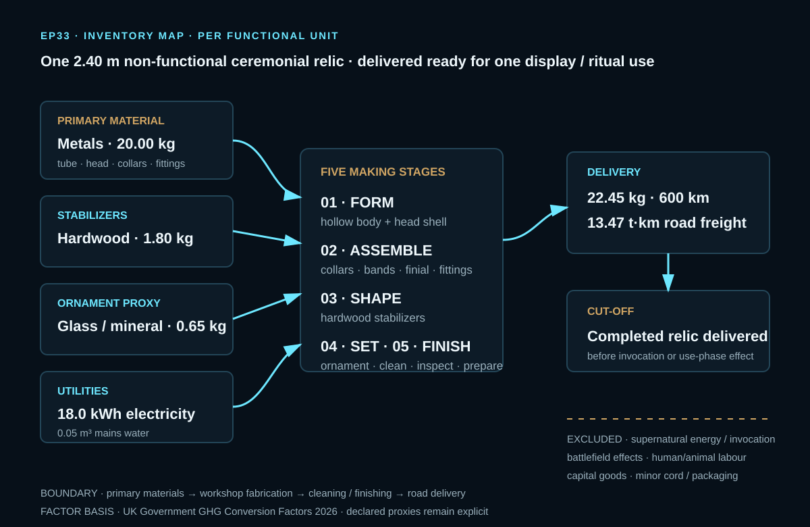
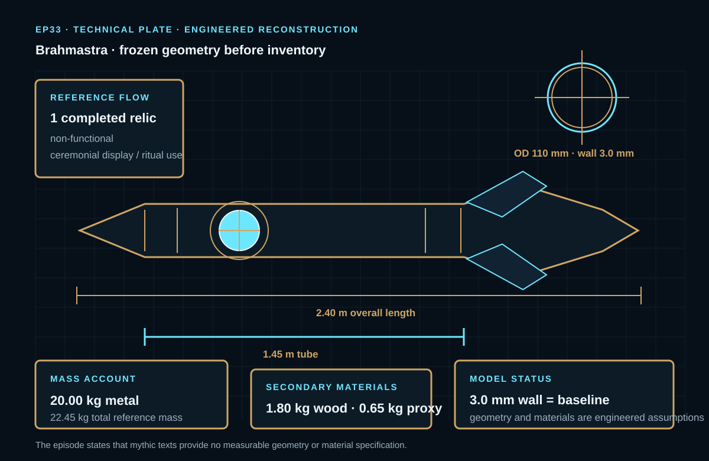
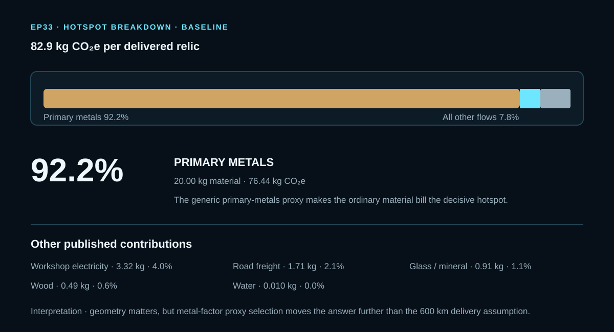

EPISODE #33 · MYTHS & LEGENDS
Brahmastra
What happens when a divine weapon is modelled only as a delivered ceremonial relic?
THE SUBJECT
The myth stops at delivery.
The approved model does not attempt to quantify the destructive power of the Brahmastra. It reconstructs one non-functional ceremonial astral relic and follows the physical service only until the completed artifact is delivered ready for one display or ritual use.
The 2.40 m geometry, 22.45 kg reference mass and material specification are engineering choices used to make the subject measurable. The episode explicitly states that the mythic texts provide no measurable geometry or material specification, so the reconstruction and its proxies remain visible rather than being treated as historical facts.
Locked service
One completed, non-functional relic delivered ready for one ceremonial display / ritual use.
Geometry
2.40 m overall, 1.45 m tube, 110 mm main-body OD and a 3.0 mm baseline wall thickness.
Reference mass
22.45 kg total, including 20.00 kg of primary metals plus hardwood and a glass/mineral ornament proxy.
Main hotspot
Primary metals contribute 76.44 kg CO₂e, or 92.2% of the 82.9 kg CO₂e baseline.
VISUAL MODEL
Make the impossible measurable
The inventory map and technical plate separate the physical reconstruction from the mythic qualities explicitly excluded by the model.


LIFE CYCLE INVENTORY
Every flow gets a basis
All quantities, factors and contributions reproduce the approved episode. The primary-metal and ornament datasets remain explicit proxies.
| Stage | Component / activity | Activity data | Climate change | Modelling basis |
|---|---|---|---|---|
| Materials | Primary metals | 20.00 kg | 76.44 kg CO₂e | Geometry + engineered fittings. DEFRA Material use — Metals at 3.82195 kg CO₂e/kg; deliberately generic primary-metals proxy. |
| Materials | Hardwood stabilizers | 1.80 kg | 0.49 kg CO₂e | Illustrated geometry estimate. DEFRA Material use — Wood at 0.26950 kg CO₂e/kg. |
| Materials | Glass / mineral ornament proxy | 0.65 kg | 0.91 kg CO₂e | Narrative proxy for the green ornament. DEFRA Material use — Glass at 1.40277 kg CO₂e/kg. |
| Fabrication | Workshop electricity | 18.0 kWh | 3.32 kg CO₂e | Cutting, forming, joining and finishing. Composite UK electricity lifecycle proxy at 0.18436 kg CO₂e/kWh: generation + T&D + WTT. |
| Delivery | Road freight | 13.47 t·km | 1.71 kg CO₂e | 22.45 kg × 600 km / 1000. Average non-refrigerated HGV + WTT at 0.12715 kg CO₂e/t·km. |
| Finishing | Mains water | 0.05 m³ | 0.010 kg CO₂e | Cleaning and finishing. DEFRA Water supply at 0.19130 kg CO₂e/m³. |
Included
Primary material production, workshop fabrication electricity, cleaning water and road-freight delivery.
Excluded
Supernatural energy or invocation, battlefield / target consequences, human and animal labour, capital goods and minor cord / packaging.
Cut-off event
The model stops at completed relic delivery, before any supernatural invocation or use-phase effect.
Proxy disclosure
The primary-metal factor is deliberately generic because the episode identifies no product-specific DEFRA factor for the mixed-metal ceremonial relic. The green ornament is represented by glass as a narrative material proxy.
HOTSPOT
Most of it is metal
A short journey and a small electricity allowance remain visible, but they are secondary to the material choice.

Main result
82.9 kg CO₂e
Per delivered relic.
Primary metals
76.44 kg CO₂e · 92.2%
The dominant baseline contribution.
Workshop electricity
3.32 kg CO₂e · 4.0%
The largest non-material contribution.
Road freight
1.71 kg CO₂e · 2.1%
600 km remains secondary to material production.
Sensitivity A · wall thickness
2.0 mm → 68.2 kg CO₂e (−17.7%)
3.0 mm → 82.9 kg CO₂e
4.0 mm → 97.2 kg CO₂e (+17.3%)
Reference mass moves from 18.70 to 22.45 to 26.13 kg; factor choice, energy, delivery distance and all other flows remain fixed.
Sensitivity B · metal factor
Closed-loop → 39.2 kg CO₂e (−52.7%)
Steel-cans → 63.7 kg CO₂e (−23.2%)
Baseline → 82.9 kg CO₂e
Mixed-cans → 108.7 kg CO₂e (+31.1%)
Mass, boundary and non-metal flows remain unchanged.
Geometry matters
A 2–4 mm wall changes the baseline from 68.2 to 97.2 kg CO₂e. The artifact is an engineering reconstruction, so its physical dimensions are a material modelling parameter.
Proxy choice matters more
The metal-factor cases span 39.2–108.7 kg CO₂e with the same mass and boundary. The episode identifies this as proxy / model uncertainty, not a claim about the historical composition of the mythic object.
Logistics are secondary
The 600 km road-delivery assumption contributes 2.1% of the baseline. The footprint remains governed by the ordinary materials used to reconstruct the relic.
THE VERDICT
Materials dominate.
Geometry matters.
Proxy choice matters more.
Logistics are secondary.
A legendary object can still be governed by ordinary material choices.